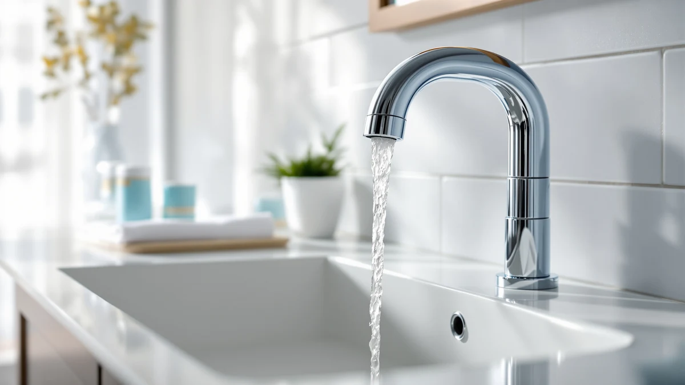

Touchless vs Manual Faucet (2026)
Prices and picks verified as of August 2026. Independent, reader-supported reviews.


Things to Know Before You Buy
- Touchless faucets use an infrared sensor and a battery-powered or hardwired solenoid valve, so nothing about the water flow depends on your hand.
- Manual faucets run on a handle and cartridge, the same mechanism plumbers have installed for decades, with no electronics to fail.
- Touchless models typically cost $40 to $340, while manual faucets range from about $18 to $150 at a comparable quality tier.
- Battery-powered touchless faucets need fresh AA batteries roughly once or twice a year, depending on how often the sensor triggers.
- Both styles fit standard single-hole and widespread sink configurations, so the touchless vs manual faucet choice rarely limits which sink you can use.
The touchless vs manual faucet decision for your bathroom shapes how you wash your hands every time you step up to the sink, not just how the fixture looks on installation day. A touchless faucet reads your hand with an infrared sensor and starts water on its own, while a manual faucet waits for you to turn a handle the way sinks have worked for a century. Both get water from the tap to your hands. How they get you there, and what that costs you in dollars and upkeep, is where the two styles pull apart.
Price is the clearest difference between the two. Manual faucets like the Aqua Vista two-handle model start under $30, while a sensor-driven pick such as the American Standard Clean-IR can run past $300 once you factor in the electronic valve and power module. Hygiene draws the opposite crowd toward touchless, since you never grip a knob with wet or soapy hands. This guide compares both across build quality, price, and day-to-day use, then tells you which one fits your bathroom.
Quick Answer
For most guest bathrooms and budget remodels, a manual faucet is the simpler and cheaper buy, since it skips batteries and sensor electronics entirely. Choose a touchless faucet when hygiene matters most, such as a kids' bathroom or a household managing frequent colds, or when someone in your home has limited grip strength. Neither style wins the touchless vs manual faucet debate outright; the right pick depends on your budget and how much you value hands-free operation over mechanical simplicity.
What is Touchless?
A touchless faucet, also called a sensor or hands-free faucet, uses an infrared beam to detect your hands and opens an internal solenoid valve to start the flow. Move your hands away and the sensor cuts the water within a second or two. Brands like Bathfinesse and Charmingwater build touchless bathroom faucets around a sensor housed in the spout, paired with a battery compartment tucked under the sink or, on models like the American Standard Clean-IR, a hardwired power option.
Most touchless faucets run on four AA batteries, which typically last six months to a year depending on household traffic. A manual override switch lets you shut the unit off during cleaning or a power outage, and a temperature dial or side handle still controls hot and cold mix on nearly every model. You are not giving up temperature control, you are just removing the on and off motion from your hand.
The appeal is hygiene and convenience. You never grip a handle with soapy or greasy hands, which matters in a bathroom shared by kids, guests, or anyone managing a cold. Weighed against a manual faucet, that hygiene benefit costs you a battery to check and, less often, a sensor to replace.
What is Manual Faucet?
A manual faucet is the standard fixture most bathrooms already have: a handle or pair of handles connected to a cartridge or valve that you turn, lift, or push to start and stop water. Aqua Vista's two-handle sink faucet and Pacific Bay's Lynden model are both manual designs, and so is a wider two-handle set like the Pfister Courant. No sensor, no battery, no wiring, just a mechanical link between the handle and the valve.
Ceramic disc cartridges have made modern manual faucets far more reliable than the rubber-washer designs of decades past. Turn the handle and the cartridge inside rotates to open a channel for water, mixing hot and cold to your exact preference in one continuous motion. That mechanical simplicity is also why a manual faucet rarely needs troubleshooting beyond an occasional cartridge swap after years of daily use.
Compared with a touchless faucet, a manual faucet asks more of your hands and less of your wallet. You grip the handle every time, which some households want to avoid, but you never open the cabinet to check batteries or reset a sensor that stopped responding. For a straightforward install with no electronics to manage, manual remains the default choice.
Head-to-Head: Build Quality & Durability
Open up a manual faucet and you find one mechanical path: handle, cartridge, valve body. Open a touchless faucet and you add a sensor eye, a solenoid valve, wiring, and a battery pack or transformer. More parts mean more places for something to eventually need attention, and that is the core build-quality trade-off in the touchless vs manual faucet comparison.
Manual faucets from Pfister and Delta use the same ceramic disc cartridges that have proven themselves over a decade or more of daily turns, and replacing one costs about $10 to $15 when it finally wears out. Touchless models add a solenoid valve that controls flow electronically; that valve rarely fails within the first several years, but when it does, replacement usually means a service call or a new unit, since a solenoid is not built to be swapped like a cartridge.
Finish and body materials do not differ much between the two styles. Brushed nickel, chrome, and matte black all show up on both touchless and manual faucets at similar quality tiers. The real durability gap sits inside the spout, where a manual faucet's simplicity gives it a slight edge for anyone who wants to avoid electronics altogether.
Head-to-Head: Price & Value
Manual faucets win on price at almost every tier. The Pacific Bay Lynden runs about $18, the Aqua Vista two-handle sink faucet sits near $28, and even a widespread option like the Pfister Courant tops out around $60. Delta's Arvo pushes toward $148 for a premium brushed nickel finish, still well under most touchless models.
Touchless faucets start where manual pricing gets steep. Bathfinesse's touchless model runs about $42, a reasonable entry point, while Charmingwater's touchless faucet lands near $120 for a more refined finish. Spend for the American Standard Clean-IR and you are looking at roughly $334, since that price covers hardwired power integration and commercial-grade sensor hardware. For most home bathrooms, the touchless vs manual faucet price gap runs $50 to $250, and that gap is what pushes budget-conscious buyers toward manual.
Head-to-Head: Use Experience
Standing at the sink, the touchless vs manual faucet difference shows up immediately. Wave your hands under a touchless faucet and water starts within a second, no handle to find or grip with soapy fingers. That hands-free start matters most when your hands are covered in shaving cream, dish residue, or when a toddler is trying to wash up without help reaching a handle.
A manual faucet gives you something touchless cannot: precise, repeatable temperature memory. Set the handle to your preferred warm mix once, and it returns to roughly the same spot every time you turn it. Touchless faucets fix flow but usually pair with a separate temperature dial, so you manage two controls instead of one fluid motion.
Sensor sensitivity is the one real touchless faucet complaint. Stand too close while brushing your teeth and the water may start on its own; move at the wrong angle and it may not trigger at all. A manual faucet never has that problem, since your hand is the trigger and nothing else. For households with kids or elderly family members with limited grip strength, that trade-off usually still favors touchless despite the occasional false start.
When to Choose Touchless
Choose a touchless faucet when hygiene drives the decision. A bathroom shared by kids during cold and flu season, a powder room near the kitchen, or a household where someone has arthritis or limited grip strength all benefit from hands-free operation. You also gain a small water-saving bonus, since a touchless faucet shuts off automatically instead of running while you reach for a towel.
Budget matters less here than convenience. If you have already decided a touchless faucet fits your bathroom, models like the Bathfinesse or Charmingwater keep the touchless vs manual faucet price gap reasonable, while the American Standard Clean-IR suits a primary bath where you want commercial-grade reliability and do not mind the higher cost. Confirm your sink has room for the battery pack or a nearby outlet if you go with a hardwired model.
When to Choose Manual Faucet
Choose a manual faucet when budget, simplicity, or a rental property is the priority. Guest bathrooms, rental units, and any sink you do not want to think about again for a decade all favor manual, since there are no batteries to replace and no sensor to recalibrate. A faucet like the Pacific Bay Lynden or Aqua Vista two-handle model covers that need for well under $30.
Manual also wins if you want precise, repeatable temperature control without a learning curve. Anyone unfamiliar with sensor faucets, including guests and older family members set in their habits, will find a manual handle more intuitive on the first try. In the touchless vs manual faucet decision, manual is the safer default whenever simplicity and low upfront cost matter more than hands-free convenience.
Our Top Picks
After weighing build quality, price, and daily use across both styles, these three faucets cover the most common touchless vs manual faucet scenarios.

Editor’s Pick
Aqua Vista Two-Handle Bathroom Sink
A dependable two-handle manual faucet that covers the essentials without asking you to think about batteries or sensors.
$28.17
Check Price on Amazon
Best Value
Pacific Bay Lynden Bathroom Sink
The cheapest solid option in this comparison, and proof that a manual faucet does not need to cost much to work well.
$18.39
Check Price on Amazon
Premium Choice
Pfister Courant 8 in Widespread
A widespread manual faucet with a sturdier finish and feel for anyone upgrading a primary bathroom vanity.
$60.27
Check Price on AmazonIs a touchless faucet worth the extra cost over a manual faucet?
For most bathrooms, yes if hygiene or accessibility matters to your household.
Do touchless faucets work during a power outage?
Battery-powered touchless faucets like the Bathfinesse and Charmingwater keep working during an outage, since they run on AA batteries rather than house current.
Frequently Asked Questions
Is a touchless faucet worth the extra cost over a manual faucet?
Do touchless faucets work during a power outage?
How often do you need to replace batteries in a touchless faucet?
Can you install a touchless faucet yourself, or do you need a plumber?
Which is more hygienic, a touchless or manual faucet?
Final Verdict
There's no single winner in the touchless vs manual faucet choice. What matters is matching the fixture to how your household actually uses the sink. A manual pick like the Aqua Vista two-handle faucet covers most bathrooms for under $30 with nothing to maintain beyond an occasional cartridge swap, while a touchless faucet earns its higher price in busy, kid-filled, or accessibility-focused bathrooms where hands-free operation solves a real daily problem. Match the faucet to your bathroom's actual routine, and you're set until the cartridge wears out or the batteries need a swap.